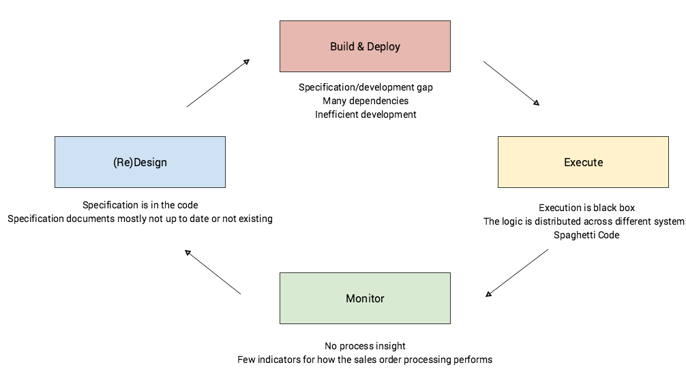
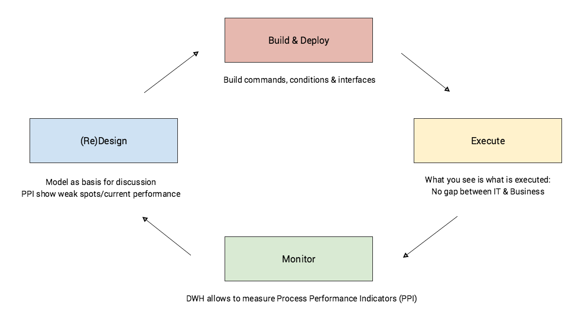

OMS
Many start ups in the eCommerce world have gone through an automation approach of their order processing as described by Fabian Wesner in his blog post (Introduction to Automated Order Management for E-commerce Startups).
They have started highly manually: every step from order to fulfillment was done by a support team. A typical culture of heroes. With increasing amount of sales orders, the entire process or subprocesses have been automated, for example with a lot of if-then-else statements. This easily ends up in unmaintainable spaghetti code. Others have introduced an ERP system, which results in a distributed logic between shop and ERP. In both cases the documentation of the implemented process can only be found in the code and development efficiency decreases with the increasing complexity. But this has also an effect on operations: Support teams need to use many tools to understand the flow of a sales order. Process insight and process performance indicators are missing. Typically there are a set of KPI aggregated in a Data Warehouse, but KPI reflect a result, if you want to understand why a specific result was realized Process Performance Indicators allow to dig deeper.
Process Management as a Solution?
Business Process Management is a management discipline that focuses on processes rather than on departments or functional units. Processes describe how and where value is created for a customer. Typically processes start outside of the company, are then processed within to finally end outside again.
Order 2 Cash is an important process that describes all activities needed that an incoming sales order needs to go through to finally end in a positive cash flow. So rather than managing a single department (finance, fulfillment, logistics), the entire flow of tasks is in focus. Because only a well orchestrated collaboration of all departments and third parties like logistic leads to efficient value creation for the customer. The process is the link between customers, departments, suppliers and logistics.

How Do You Manage a Process?
First of all it is important to understand what tasks are executed in which order. Defining “to be” process ensures common understanding for all involved parties. A process model helps to make implicit knowledge of individual player explicitly understandable for everyone involved. This understanding helps to align everyone and execute tasks in a standardized fashion.
If a to be processes is established it needs to be monitored. Does the idea of how a sales order should be process reflects the reality? Process performance indicators help to measure how efficient a process creates value for the customer. Together with the process model they give the basis to improve the process. If a process is executed more often, aspects that were an edge case at the beginning, are now worth to be explicitly modeled in the next version.
Managing the Sales Process
The goal of continuous process improvement is to enter a cycle of (re)design, execution and monitoring. That means a specific process is actively managed. Ideally an improvement iteration can be done in very short time.
Sales Order Processing in the eCommerce World
Processes in the eCommerce world have the potential to be highly automated. That means that the different tasks are executed in the IT landscape. Often spanning different IT systems. Creation of sales order in a shop systems, fulfillment with the help of fulfillment provider, finance and controlling in an ERP system. To actively manage theses processes an understanding of the implemented processes is needed as well as a possibility to measure their performance. In my time as a consultant we did often archeology projects, how I used to call them. To understand the current implementation we had to analyze the code. Documentation was typically only maintained until the mid of a project. Process performance indicators were nearly always missing. Only indirect measurement were possible. This is not a good basis for continuous improvement. If you don’t know where you are, it is impossible to tell where to go next.
At the same time processes are highly individual. If you sell concert tickets, music or other digital products, you need totally different processes than someone who sells physical goods. And if you have a make to order process installed it looks different again.
So the driving forces are the need to design and execute highly individual processes and manage them continuously to increase process efficiency. A classical approach with specification and implementation is slow and error prone. (see business IT gap) Spryker takes a totally different approach, instead of writing specifications and implementing them, process model are executed. That is right: The process model itself is understood by the spryker engine.
Sales Order Process Management With Spryker
A typical improvement cycle with Spryker looks like this: first the “to be” processes are modeled involving process and technical experts. This makes sure business and it aspects are reflected. Misunderstandings can be identified very fast and common understand of the order processing process can be established in the company. The process model is then transferred into an technical notation that the Spryker engine can execute. The process model allows to add hooks that execute php coding. Examples are sending a shipment notification email, creating a credit card preauthorization or registering a shipment with the logistic provider. The process model itself orchestrates these technical functions. It tells in which order which technical building blocks have to be executed.

Every state in the process model can be mapped to a business state. This allows to measure process performance. How many processes are in pick pack ship subprocess? How much time does it typically take? How many credit card authorizations have failed? How long does it take to process a return? Furthermore the Spryker user interface allows to track where in the process every sales order item is. This give a process insight to support teams that talk with customers. How many processes fail? Is a problem an edge case or is it worth to be automated? All kind of Process Performance Indicators (PPI) can be defined.
If it is about to start the next process improvement iteration, the current process model is already available. No need to look into the coding to understand what the engine actually executes. The process model combined with the performance indicator form the basis for the next improvement. Which can also be realized in very short time. The process models needs to be updated, and new hooks are implemented. Then the new process can be executed and monitored again.
The advantages are clear: highly individual processes can be designed with a model that allows a common understanding of all stakeholders. The process itself can be measured and weak spots identified. This allows the company to do what is actually supposed to do: Continuously improving the way how customer value is created.